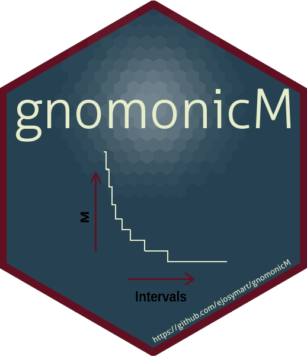

Estimate Natural Mortality (M) throughout the life history of species This package allows to estimate Natural mortality for different life stages for organism, usually fish and invertebrates, based on the gnomonic interval approach (Caddy, 1991, 1996; Martínez-Aguilar et al., 2005). We have included improvements modifying some equations and the estimation procedure.
Installation
Get the development version from github:
# install.packages("devtools")
devtools::install_github("ejosymart/gnomonicM")Or install the CRAN version:
install.packages("gnomonicM")After, that call the package:
library("gnomonicM")Examples
This is a basic example which shows you how to estimate natural mortality based on gnomonic approach using the data on Caddy (1996):
Deterministic method
model <- gnomonic(nInterval = 7,
eggDuration = 2,
longevity = 365,
fecundity = 200000,
a_init = 2)
#> --------------------------------------------------------
#>
#> No additional information. You are only considering the egg stage duration = 2
#>
#> --------------------------------------------------------
print(model)
#> Proportionality constant (alpha) = 1.381646
#>
#> --------------------------------------------------------
#>
#> Constant proportion of the overall natural death rate (G) = 1.644704
#>
#> --------------------------------------------------------
#>
#> Main results of gnomonic method:
#>
#> Gnomonic_interval interval_duration_day total_duration M_day M_year No_Surv
#> 1 1 2.000 2 0.822 300.158 38614
#> 2 2 2.763 5 0.595 217.247 7455
#> 3 3 6.581 11 0.250 91.217 1439
#> 4 4 15.674 27 0.105 38.300 278
#> 5 5 37.330 64 0.044 16.081 54
#> 6 6 88.907 153 0.018 6.752 10
#> 7 7 211.745 365 0.008 2.835 2Stochastic method
modelUniform <- gnomonicStochastic(nInterval = 7,
eggDuration = 2,
longevity = 365,
distr = "uniform",
min_fecundity = 100000,
max_fecundity = 300000,
niter = 1000,
a_init = 2)
#> --------------------------------------------------------
#>
#> No additional information. You are only considering the egg stage duration = 2
#>
#> --------------------------------------------------------
#>
#> [1] "You are using a 'uniform distribution' for fecundity."For more details, please read the vignettes of this package.
References
Caddy JF (1991). Death rates and time intervals: is there an alternative to the constant natural mortality axiom? Reviews in Fish Biology and Fisheries 1:109–138. DOI: 10.1007/BF00157581.
Caddy JF (1996). Modelling natural mortality with age in short-lived invertebrate populations: definition of a strategy of gnomonic time division. Aquatic Living Resource 9:197–207. DOI: 10.1051/alr:1996023.
Martínez-Aguilar S, Arreguín-Sánchez F, Morales-Bojórquez E (2005). Natural mortality and life history stage duration of Pacific sardine (Sardinops caeruleus) based on gnomonic time divisions. Fisheries Research 71:103–114. DOI: 10.1016/j.fishres.2004.04.008.
Torrejón-Magallanes J, Morales-Bojórquez E, Arreguín-Sánchez F. 2021. Improving the gnomonic approach with the gnomonicM R-package to estimate natural mortality throughout different life stages. PeerJ 9:e11229. DOI: 10.7717/peerj.11229.